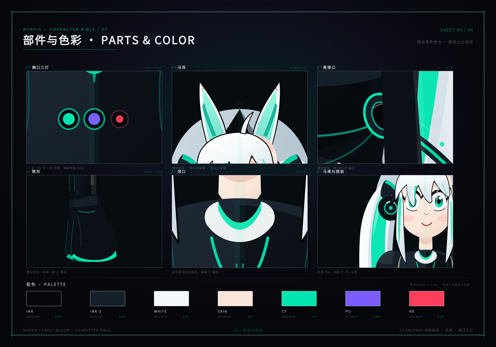
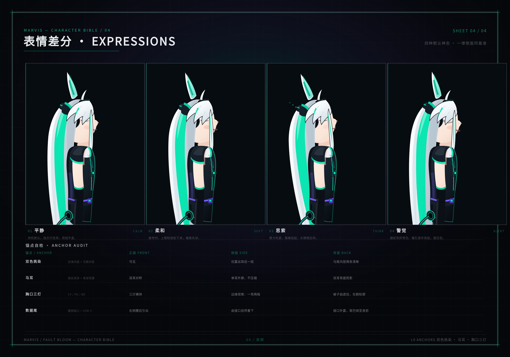

CHARACTER BIBLE / 故障绽开 · V3
FAULT
BLOOM
角 色 设 定 集
一套用坐标说话、不用形容词说话的角色规范。三视图、姿态、部件、表情全部出生于同一张基准网格， 锚点（三灯 / 马耳 / 双色挑染）在任何角度都不改写。整套设定集的第一原则不是"更美"，而是"可被测量"。
01
设定集 · 五个版面
SHEETS 00—04





02
四条规矩
FOUR RULESRULE 01
一个网格，四个视图
正面、侧面、背面、动作全部在同一坐标系里出生。面部纵深 0.34W、胸腔厚度 0.41W、马尾根部落在肩线后 0.09W——视图之间不是"分别画"，而是"同一具身体的不同投影"。
RULE 02
锚点不许翻译
双色挑染、马耳、胸口三灯是不可变项。三灯永远是 CY/PU/RD 横排等距 30px，侧视只能压缩不能改写；马耳永远银白耳背配青绿耳膜，侧视只能收窄不能变种。
RULE 03
让观众自己校验
第 01 页铺满 0H—5H 水平参考线，同一条线穿过三个人物的同一身体位置。技术图纸的说服力，来自它允许被测量。
RULE 04
克制的情感
配色锁死在 INK 62% / WHITE 14% / INK-3 12% / SKIN 8% / CY 3%，紫 0.8%、红 0.2% 只留给次高光与告警。没有渐变泛滥、没有发光堆叠，角色的"暖"由表情差分承担。
03
版面分工
SHEET DIVISION| 版面 | 承担什么 | 关键手法 |
|---|---|---|
| 01 三视图 | 证明"同一个人" | 0H—5H 共用参考线横穿三人；左侧 5.9H 标尺 |
| 02 姿态 | 证明锚点不随姿态漂移 | 前倾 14°、跨距 1.94H 的蹬地姿态 + 四处引线 + 头部三视角并置 |
| 03 部件 | 把锚点拆开看 | 六格放大：三灯 5.6×、耳 2.3×、尾接口 4.7×、靴 2.0×、领口 5.1×、马尾 1.65× |
| 04 表情 | 把人格装回去 | 四种默认神态 + 锚点自检表 |
04
锚点与基准网格
ANCHORS & BASE GRID胸口三灯LAMP TRIAD
CY 主 / PU 次 / RD 告警，横排等距 30px。
马耳HORSE EAR
银白耳背 · 耳内青绿膜 · 独立于发箍。
尾接口TAIL DOCK
腰侧偏后，接口环以 CY 描边。
靴形BOOT FORM
楔形厚底，脚踝一圈 CY 断面。
领口COLLAR
白色硬领压住锁骨，领缘一条 CY 细线。
马尾与挑染TAIL + STREAK
外层 INK，内层 CY / PU 双条。
| 网格锚点 | Y 坐标 | 说明 |
|---|---|---|
| 头顶 | 168 | 基准画布 1600 × 2400 |
| 下巴 | 512 | 头高 344px，5.9 头身 |
| 肩线 | 580 | 三灯所在横排的起点 |
| 腰线 | 876 | — |
| 髋线 | 1006 | 跨步姿态的旋转中心 |
| 膝 | 1424 | — |
| 地面 | 2216 | 靴底最低点回算落地补偿 |
05
色卡 · PALETTE
LOCKED RATIO
INK / WHITE 62 : 14INK-3 12SKIN 8CY 3PU 0.8RD 0.2
验收口径：把任意两页并排，量头顶到下巴的像素高度，误差超过 3% 就算没做完。
06
设定文档
SPECIFICATION DOCSdocs/persona-spec-v3.md
人格执行规范 v3
角色人格基线、行为边界与执行条款
docs/fault-bloom.md
Fault Bloom 设计哲学
网格归零、锚点语法与四个版面的分工
docs/ci.md
一致性门禁接入说明
persona-lint 与硬门禁的接线方式
docs/research/01-ai-persona-report.md
AI 拟人形象研究报告
形象可信度与拟人化的调研底稿
docs/research/02-consistency-handbook.md
角色一致性工程手册
跨视图一致性的工程量化解法
docs/research/04-ip-next-step.md
可执行 IP 下一步
关系门槛与代价的取舍
设定正文以仓库内 Markdown 为准；本页只做视觉呈现与索引。